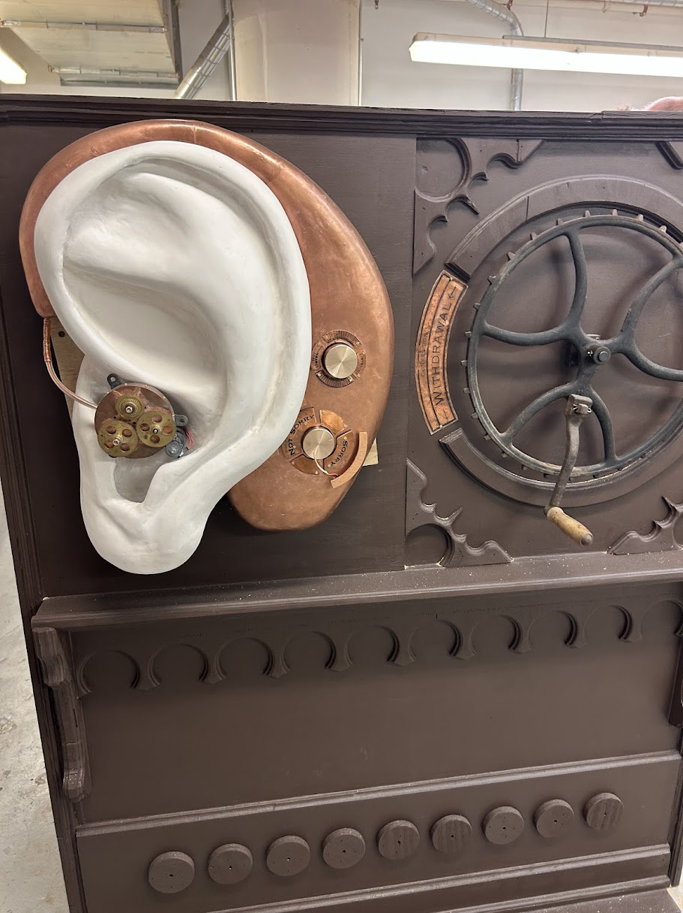
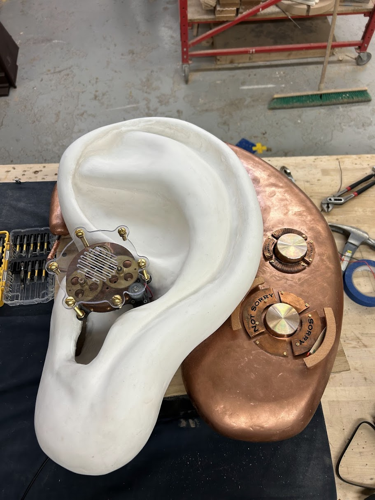
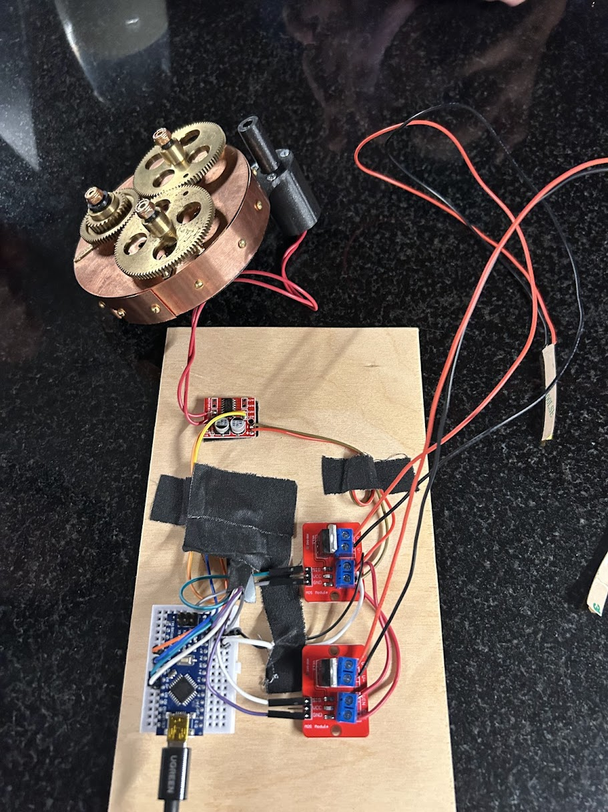

Ear Teller
Interactive confession teller • Motorized hearing aid • Dial-driven voice styling
Overview

Like any bank, this one has tellers—just… weirder. With the Ear Teller, visitors whisper a confession, turn a single dial, and hear someone else’s confession read back with a voice modifier that matches the dial’s setting. Two LEDs—one for “sorry,” one for “not sorry”—show where the vibe is headed.
My Role

I handled the motion and some of the tricky integration details. For the mechanical ear, Spatial Pixel repurposed gears from an old grandfather clock. I designed a compact mount for an N20 DC motor to drive the train, and wired it into a 5 V architecture so an Arduino Nano and a small motor driver dropped right in.
Electronics & Integration

The Teller runs on a tidy low-voltage stack—motor, Nano, drivers, and the AI box from Spatial Pixel. The goal was museum reliability: clean wiring, serviceable mounting, and components that play nicely together in a 5 V world.
Dial Logic (Favorite Challenge)
The dial isn’t a potentiometer—it’s a quadrature encoder flashed as a keyboard. Encoders report relative movement (ticks left/right), not an absolute angle. Instead of adding homing hardware or forcing a fixed power-up position, I decoupled the control from physical angle and treated the dial as a Offset Control.
Turning the dial nudges a single variable—call it sorriness—up or down. That one number drives both the voice style and the LED feedback. The two LEDs mirror the same value via PWM: the “sorry” LED brightens as sorriness rises, the “not sorry” LED brightens as it falls. Because the LEDs and the voice read from the same source of truth, they’re always in sync even though we never measure an absolute dial position.
The nice side effect: if the encoder ever skips or drops a tick, nothing breaks. We simply don’t nudge the value on that tick; the next tick updates it. There’s no drift between lights and audio because the dial isn’t the truth—the sorriness value is. We clamp it to a range (e.g., 0–100%), add a little smoothing for feel, and it powers up at a sensible default without any homing routine.
Live Demos
Status
The Ear Teller is integrated and exhibition-ready. The motor drive is reliable, the AI readback feels alive, and the dial logic works smoothly without extra sensors.